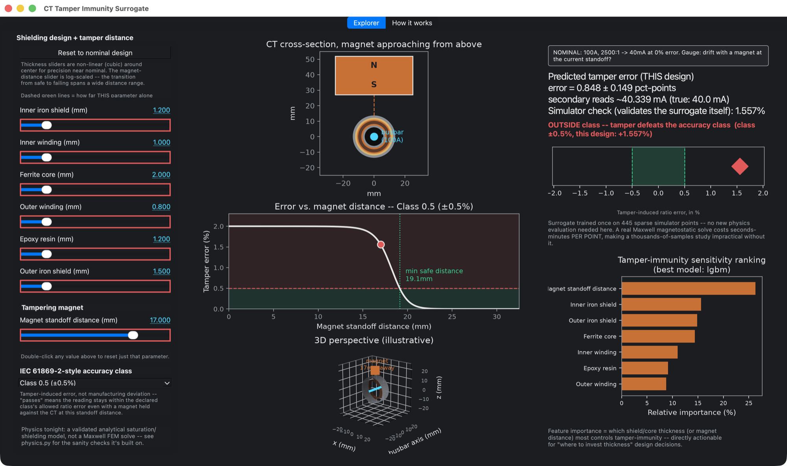

- Physics
- MagnetTwo-charge-sheet block-magnet field, accurate in the near field
- ShieldingThin-shell attenuation through the inner and outer iron layers
- CoreGeneralised Fröhlich saturation of the ferrite
- MeteringRatio error from the resulting drop in ferrite permeability
- ValidationChecked against physical limits and calibrated to two bench measurements
- Role of ML
- The workflow is solver-agnostic: fed with Ansys Maxwell FEM data, where each design point costs seconds to minutes, the same DoE and surrogate make thousand-point studies instant. Here, trained on 512 physics evaluations, it also adds calibrated uncertainty and a sensitivity ranking.
Background
Revenue-metering current transformers are a known fraud target. A strong permanent magnet held against a CT can locally saturate its iron shielding and ferrite core, so the meter under-reads. IEC 61869 defines the accuracy classes, but it does not say, for a given shield and core design, how close a magnet can come before the reading leaves its class. This project answers that question with the same DoE-plus-surrogate approach as the meander antenna project, applied here to magnetostatics instead of RF.
Approach
The physics is a four-stage closed-form model. A two-charge-sheet block-magnet field, which stays accurate in the near field where a point dipole does not, feeds a thin-shell shielding calculation through the inner and outer iron layers. Generalised Fröhlich saturation, with a tunable sharpness, then gives the drop in ferrite permeability, and the ratio error follows from it. The chain was checked against physical limits before any fitting: the far field gives exactly 0 % error, error falls steadily with magnet distance, and a thicker shield always reduces it. A 512-point scrambled-Sobol design of experiments then covered 7 parameters: six shield, core and winding thicknesses plus the magnet standoff, log-sampled so the points concentrate around the transition. FLAML AutoML selected LightGBM as the best model family, wrapped in a 25-member bootstrap ensemble for calibrated uncertainty.

Process
Magnet strength and saturation sharpness were calibrated together against two bench measurements: tamper onset at about 21 mm and near-full distortion at about 13 mm. Using the datasheet magnetisation of an N45–N52 magnet (1.1 MA/m) directly gives a transition that is too wide and too far out, so the model uses a fitted effective value of 18,000 A/m that reproduces the measured near-field fall-off. The code labels it as an effective constant, not a magnet property. The ensemble's uncertainty was also checked against held-out data rather than assumed. Its raw 1-sigma coverage was 98.5 %, meaning the intervals were far too wide, and a calibration factor of 0.29 brings coverage to the correct 68.27 %.
Results
- Held-out relative RMSE of 2.37 % (LightGBM, selected by AutoML from several model families).
- A live desktop app: drag the shield-layer thicknesses and the magnet standoff and see immediately whether the design stays inside its IEC accuracy class during a tampering attempt. Done with FEM, each point would be a separate Maxwell solve.
- For any shield stack, the app reads the minimum safe magnet distance off the error-versus-distance curve, showing what each extra 0.1 mm of iron buys.
- A sensitivity ranking that points to the right design lever. Magnet standoff dominates (26 %), followed by the inner iron shield, outer iron shield and ferrite thickness at about 14–16 % each. The winding and epoxy layers matter least.
- Stated limits: the shielding formula uses the standard infinite-cylinder approximation. The real CT is short and capped, so end leakage through the iron caps is not captured; that is the natural next step for a full Ansys Maxwell model.
Live demo
Screen recording of the packaged app: adjusting shield thicknesses and magnet standoff distance and watching the predicted tamper error respond in real time.